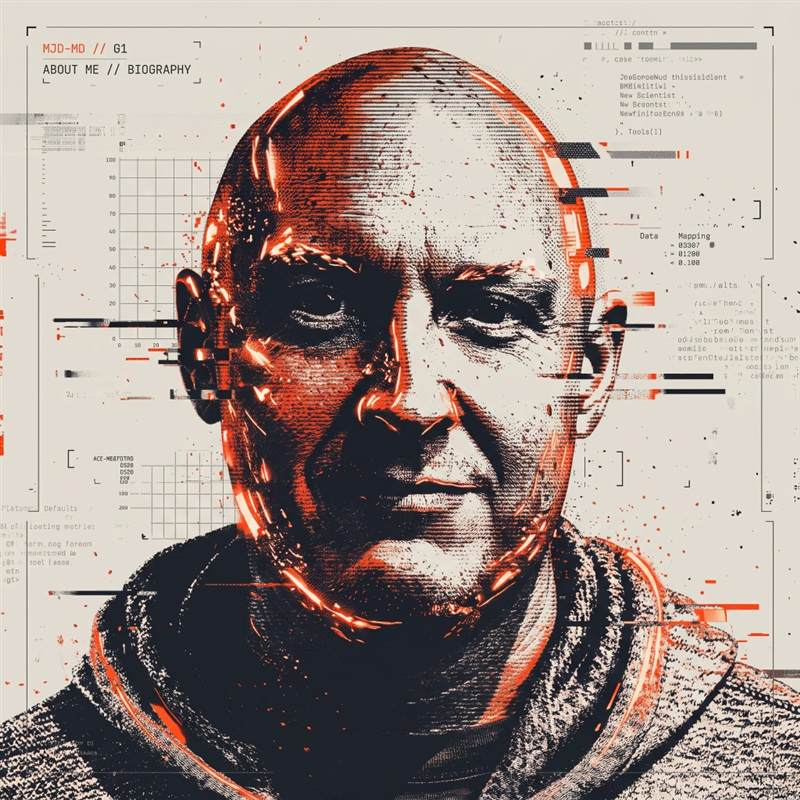

01 // ABOUT ME

Hello. I'm Martin.
I live in South East London and for fifteen years, I've run massive science spectacles for New Scientist magazine and the Royal Institution, working with everyone from top scientists off the TV to members of the Royal Family.
Today, I curate events, write copy, code workflows, and rack up a mind-boggling amount of listening hours on Spotify. I am a fast learner capable of mastering almost any system, provided I am not simultaneously processing the psychological damage of watching Crewe Alexandra lose on a freezing Tuesday night.
In my spare time, I drink single-origin coffee, attempt to complete the NYT's daily mini-crossword in under 30 seconds, and occasionally convince my Shih Tzu, Bette, to acknowledge my existence.
Beyond this biography, the archive is partitioned into four specialised sections. Explore live coding experiments, investigate twenty years of mistaken identity emails transformed into music, listen to high-concept curated playlists, or open a line to the direct dispatch terminal: